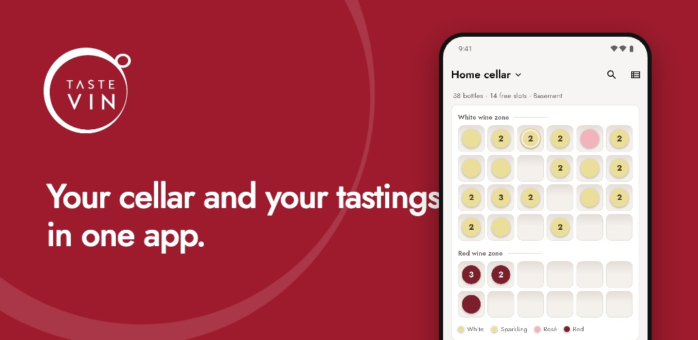
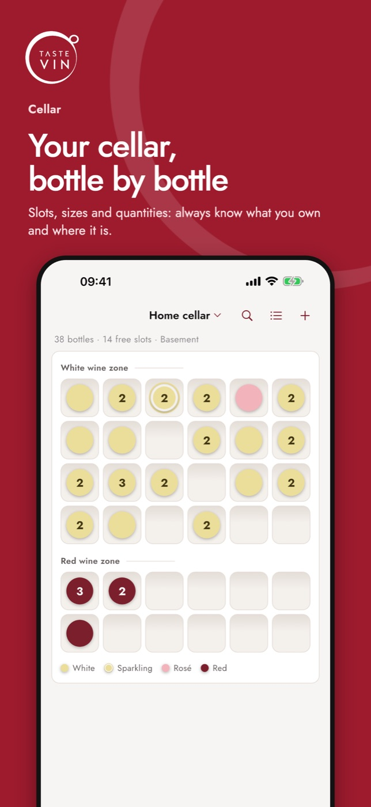
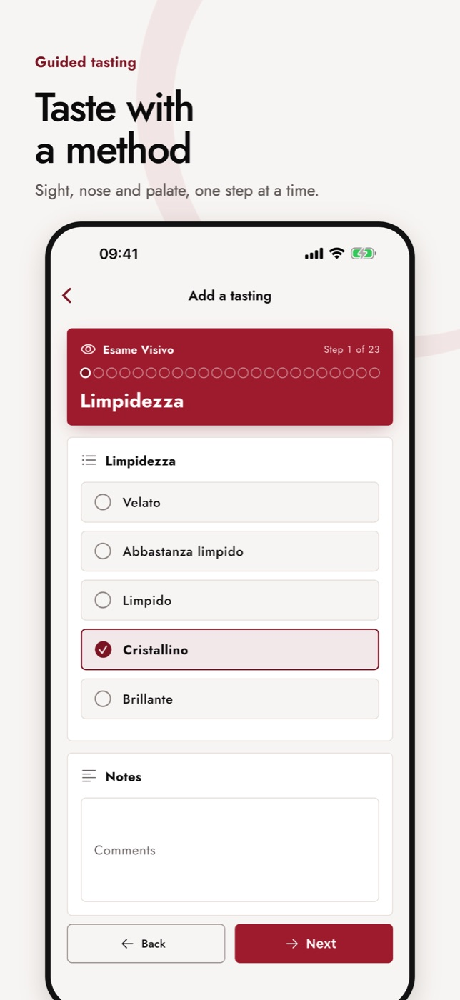
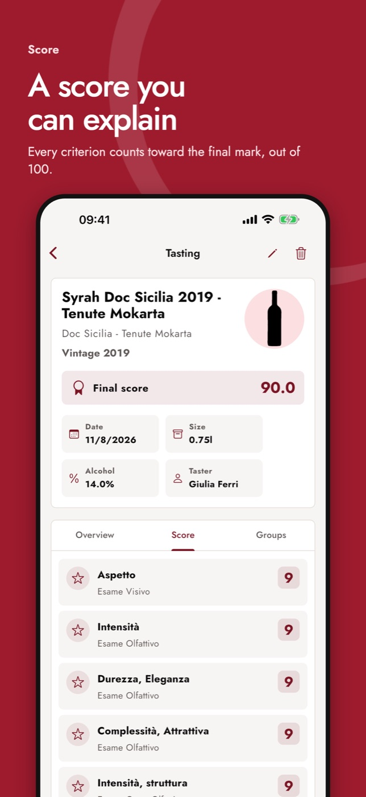
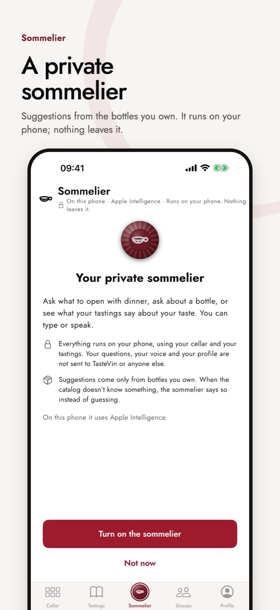

TasteVin
An app for people who keep wine at home. You track your cellar, taste with a guided score sheet, and ask a sommelier that runs on your phone. I built all of it, from the API to the store release.
- Role
- Full-stack developer (freelance)
- Client
- Synergy Design
- Stack
- Node.js, PostgreSQL, Redis, SvelteKit, Flutter

Overview
There's a Node.js API, a SvelteKit dashboard for the staff, and a Flutter app on the App Store and Google Play in Italian, English, French and German.
Mobile app
The cellar is a wall of labels, and adding a bottle is one flow. A tasting starts from a bottle you own and can be saved as a draft. The sommelier is an LLM that runs on the phone, so the text and voice chats never leave it. Next up are AI tasting suggestions.



